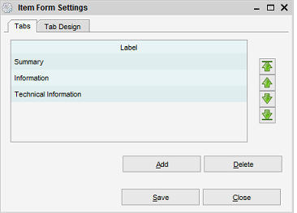

Item Form Settings
Menu path: Settings > Item Form Settings
This dialog allows you to maintain the tabs as displayed on the item form.
By default, for most modules, there are two tabs: Information and Technical Information.

Tabs
Adding a Tab
Here you can define new tabs or delete and existing one. To create a new tab press the "Add" button. This will
open an item form where you can define the name and an icon for the new tab.
Press the Save button to make this tab available.
Removing a Tab
Select the tab you want to remove from the Tabs table and press the Delete button.
Setting the order for the Tabs
The order in which the tabs are displayed on the item form can be changed to your needs. Select a Tab from the
Tabs table and use the arrow buttons from the right hand side of the screen to move the Tab. Press the Save button
to save your settings.
Tab Design
Tabs need to have fields assigned to them in order for them to function correctly. In the upper part of the screen
you can select the Tab you would like to edit. In the lower part of the screen you will find the available fields
and the selected fields.
Available fields can be added to this Tab, the selected fields have already been
assigned to this Tab. Double-click on a field to move it from the selected to available list or vice versa.
Note: In case there are no available fields listed you will first have to make fields available by removing them from one
of the other tabs.
Field Order
You can change the location of a field. Select one of the selected fields and use the arrow buttons to move it to its desired location
(up or down).